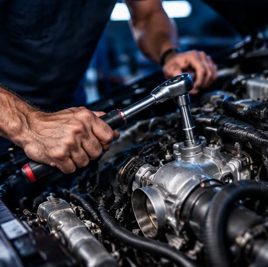
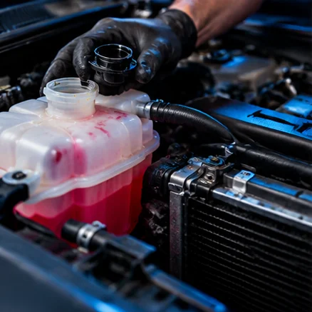

DIAGNOSTICS
Diagnostics
Get help identifying vehicle issues and understanding the next steps.
Mobile automotive diagnostics, tune-ups, electrical work, brakes and repairs brought to your location. Skip the shop trip—GSA comes to you.
From check-engine lights and no-start problems to brakes and regular maintenance, GSA brings automotive service to you.

Get help identifying vehicle issues and understanding the next steps.

Routine tune-ups and maintenance to keep your vehicle running smoothly.
Brake inspections and repair services to help keep your vehicle safe.

Troubleshooting electrical issues and related vehicle components.
Diagnostics for illuminated check-engine lights and performance issues.

Help diagnosing cooling-system and overheating problems.

Troubleshooting when your vehicle will not start.
Convenient mobile service for routine vehicle maintenance.
GSA Mobile Mechanics provides on-location automotive services in San Antonio, Texas. From diagnostics and check-engine lights to brakes, electrical work, tune-ups and no-start issues, GSA helps drivers get their vehicles back on the road without a traditional shop visit.
CALL GSA MOBILE MECHANICS ↗Engine light, electrical problem, overheating or a vehicle that will not start? Contact GSA to discuss your symptoms and arrange mobile service.
GSA Mobile Mechanics serves San Antonio, Texas. Check out our Google Business listing to see our location, customer reviews, and business information. Call to confirm mobile service availability at your address.
Need help with your vehicle? Call GSA Mobile Mechanics or send your vehicle details to request service.
REAL WORK.
REAL UPDATES.
See what's happening with GSA Mobile Mechanics. Follow us on Instagram and Facebook for updates, photos, and more.
Social posts are displayed directly by Instagram and Facebook when their embedding settings permit. If a feed doesn't load in your browser, use the profile links above.